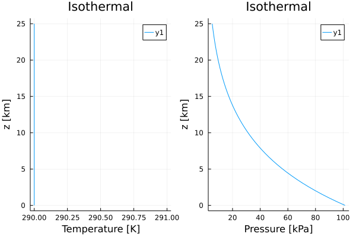
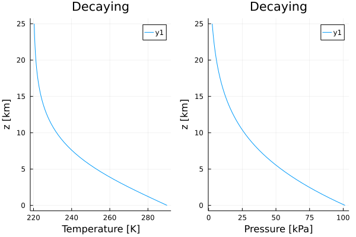
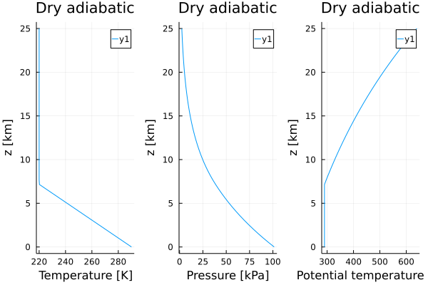

Atmospheric temperature profiles
Several temperature profiles are available in Thermodynamics.TemperatureProfiles. Here, we plot each profile.
Usage
Using a profile involves passing two arguments:
param_seta parameter set, from CLIMAParameters.jlzaltitude
to one of the temperature profile constructors.
IsothermalProfile
using Thermodynamics
using Thermodynamics.TemperatureProfiles
using CLIMAParameters
using CLIMAParameters.Planet
using Plots
struct EarthParameterSet <: AbstractEarthParameterSet end;
const param_set = EarthParameterSet();
FT = Float64;
z = range(FT(0), stop = FT(2.5e4), length = 50);
isothermal = IsothermalProfile(param_set, FT);
args = isothermal.(Ref(param_set), z)
T = first.(args)
p = last.(args)
p1 = plot(T, z./10^3, xlabel="Temperature [K]");
p2 = plot(p./10^3, z./10^3, xlabel="Pressure [kPa]");
plot(p1, p2, layout=(1,2), title="Isothermal", ylabel="z [km]")
savefig("isothermal.svg")
DecayingTemperatureProfile
using Thermodynamics.TemperatureProfiles
using Thermodynamics
using CLIMAParameters
using CLIMAParameters.Planet
using Plots
struct EarthParameterSet <: AbstractEarthParameterSet end;
const param_set = EarthParameterSet();
FT = Float64;
z = range(FT(0), stop = FT(2.5e4), length = 50);
decaying = DecayingTemperatureProfile{FT}(param_set);
args = decaying.(Ref(param_set), z)
T = first.(args)
p = last.(args)
p1 = plot(T, z./10^3, xlabel="Temperature [K]");
p2 = plot(p./10^3, z./10^3, xlabel="Pressure [kPa]");
plot(p1, p2, layout=(1,2), ylabel="z [km]", title="Decaying")
savefig("decaying.svg")
DryAdiabaticProfile
using Thermodynamics.TemperatureProfiles
using Thermodynamics
using CLIMAParameters
using CLIMAParameters.Planet
using Plots
struct EarthParameterSet <: AbstractEarthParameterSet end;
const param_set = EarthParameterSet();
FT = Float64;
z = range(FT(0), stop = FT(2.5e4), length = 50);
dry_adiabatic = DryAdiabaticProfile{FT}(param_set);
args = dry_adiabatic.(Ref(param_set), z)
T = first.(args)
p = last.(args)
θ_dry = Thermodynamics.dry_pottemp_given_pressure.(Ref(param_set), T, p)
p1 = plot(T, z./10^3, xlabel="Temperature [K]");
p2 = plot(p./10^3, z./10^3, xlabel="Pressure [kPa]");
p3 = plot(θ_dry, z./10^3, xlabel="Potential temperature [K]");
plot(p1, p2, p3, layout=(1,3), ylabel="z [km]", title="Dry adiabatic")
savefig("dry_adiabatic.svg")
Extending
Additional constructors, or additional profiles can be added to this module by adding a struct, containing parameters needed to construct the profile, and a functor to call the profile with a parameter set and altitude.